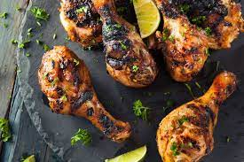
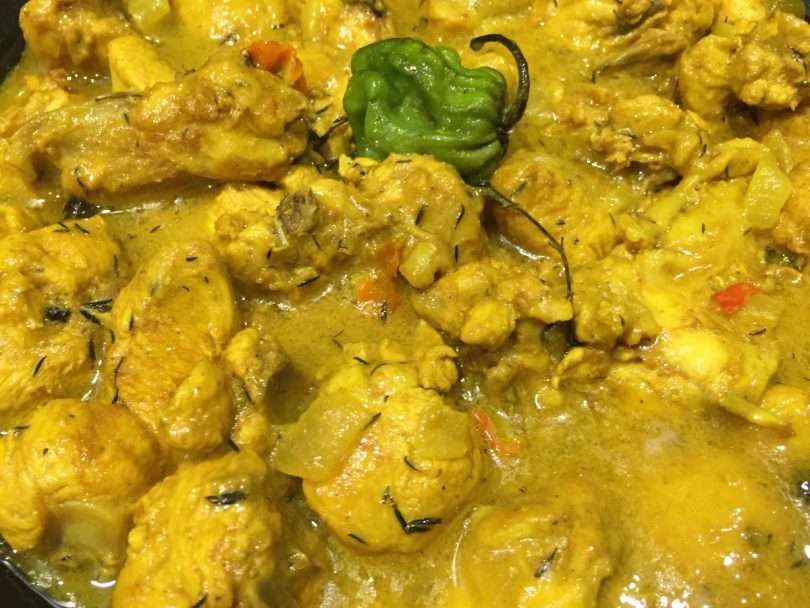
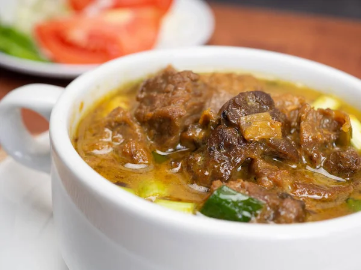
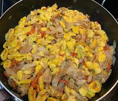
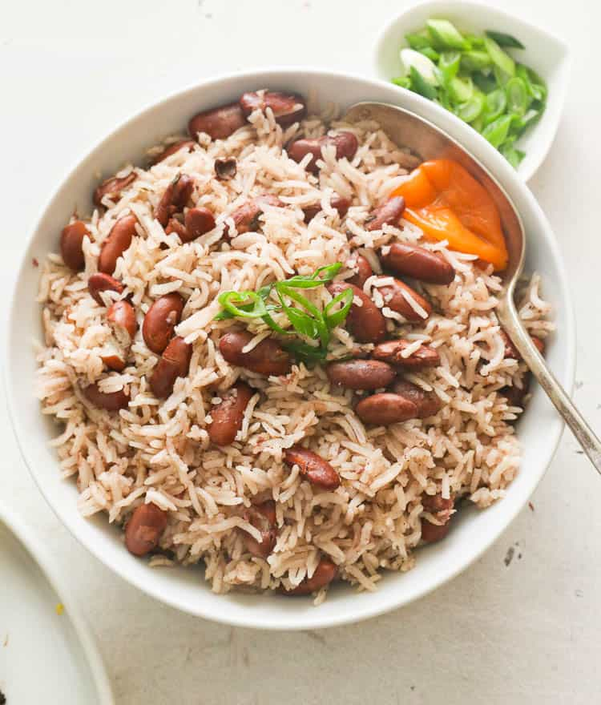

Welcome to My Cookbook!
This website is your one-stop-shop for all your your favorite Jamaican dishes. I hope you'll enjoy not just the content but also the meals
Browse recipes »Favourite Recipes
-
Jerk Chicken
Jerk chicken is a classic Jamaican dish that is known for its spicy and smoky flavor. It's traditionally made with a marinade that includes scallions, thyme, allspice, and Scotch bonnet peppers... View recipe »

-
Curry Chicken
A spicy and flavorful dish made with chicken, vegetables, and Indian spices... View recipe »
 -
Curry Goat
A spicy and flavorful dish made with goat, vegetables, and Indian spices... View recipe »
 -
Ackee And Saltfish
One of the favorite dishes on many Jamaican menu, made with Ackee , Salt (Cod) fish and seasonings... View recipe »
 -
Rice And Peas
This is a must have with Chicken or any other meat kind. Made from maily white rice and red peas/beans... View recipe »

{kind=link}
{kind=link}
{kind=link}
{kind=link}
{kind=link}
About Us
My name is Damian, and I'm from Jamaica. My family and I have been cooking and enjoying these foods for years and we have decided to share our family cooking secret with you!
Enjoy!
If you have any questions or suggestions, please get in touch!
- Email: info@mycookbook.com
- Phone: 876-123-1234
- Address: Anytown, AnyCity Jamaica